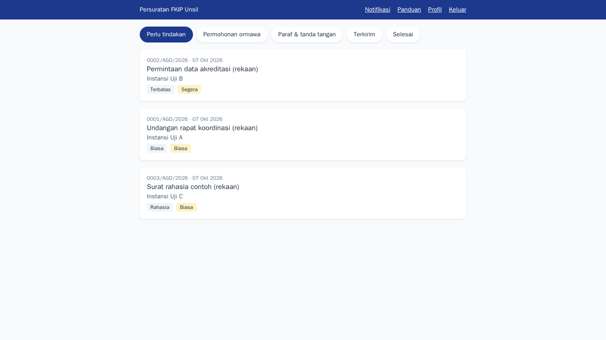
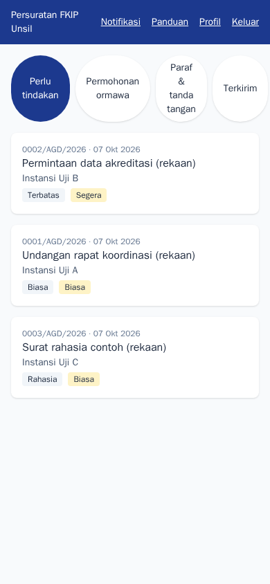
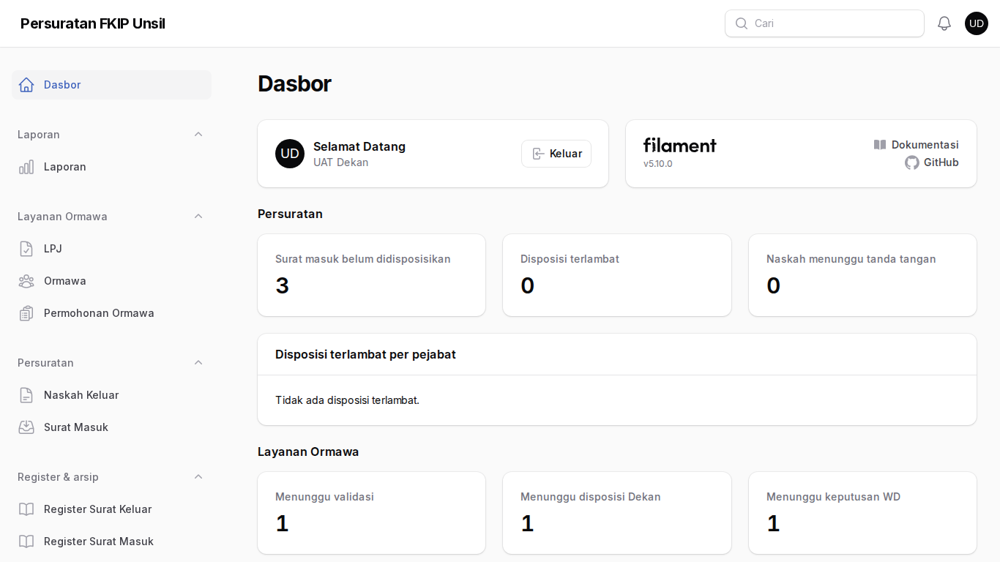
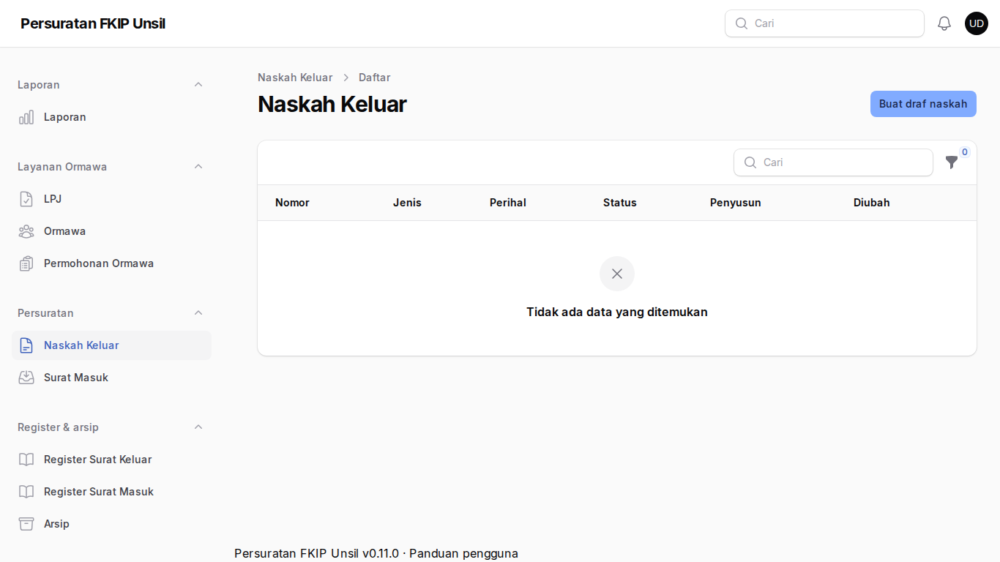
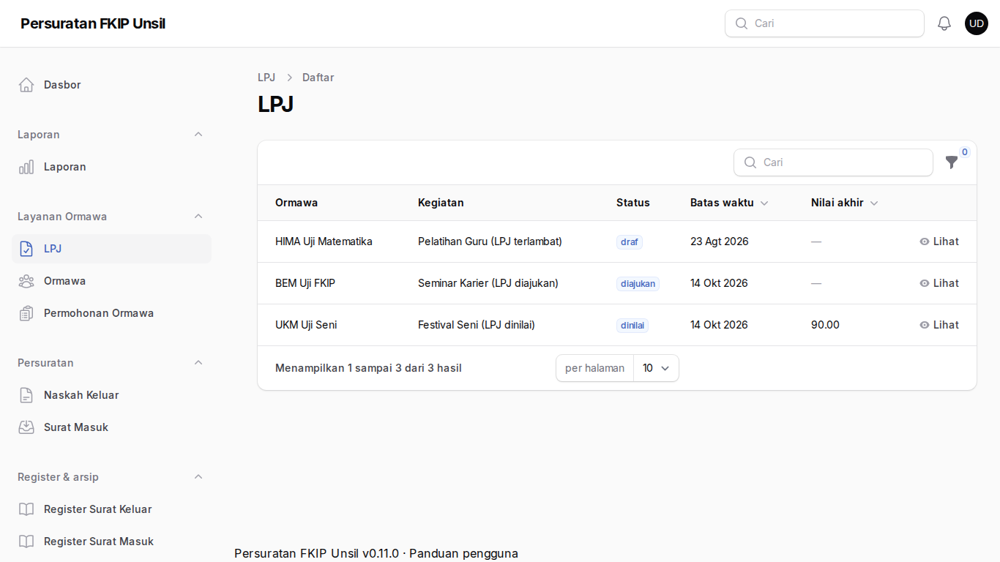
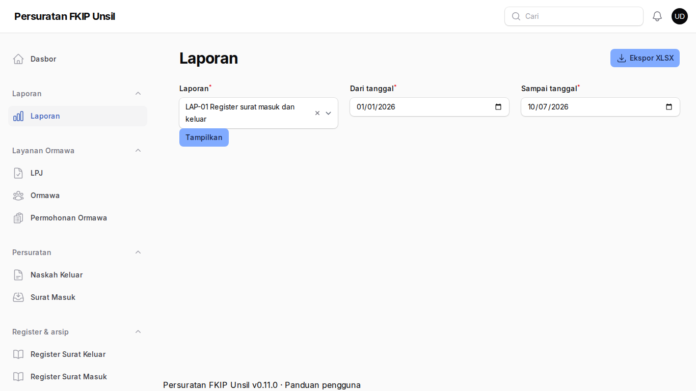

Dekan
Tujuan
Mendisposisikan surat masuk dan permohonan ormawa, menandatangani naskah, menilai LPJ, serta memantau kinerja lewat dasbor dan laporan.
Cara masuk
Akun dibuat admin. Pada masuk pertama ke panel /admin Anda wajib menyiapkan MFA (aplikasi autentikator); selanjutnya kode MFA diminta saat masuk.
Langkah-langkah
- Kotak masuk
Surat masuk yang menunggu disposisi dan permohonan ormawa yang menunggu disposisi Anda.
Langkah 1 — Kotak masuk - Dari ponsel
Seluruh tugas harian dapat dikerjakan dari ponsel.
Langkah 2 — Dari ponsel - Dasbor
Angka agregat: surat belum didisposisikan, disposisi terlambat per pejabat, naskah menunggu tanda tangan, permohonan per tahap, LPJ terlambat.
Langkah 3 — Dasbor - Naskah keluar
Naskah yang menunggu tanda tangan Anda. Tanda tangani membentuk nomor, tanggal, dan QR verifikasi otomatis.
Langkah 4 — Naskah keluar - Penilaian LPJ
Buka LPJ berstatus diajukan → Nilai aspek ketepatan dan kepatuhan. Nilai akhir terbentuk setelah semua penilai mengisi.
Langkah 5 — Penilaian LPJ - Laporan
Pilih LAP-01…LAP-06, atur periode, Tampilkan; Ekspor XLSX diproses antrean dan tautan unduh muncul di lonceng notifikasi.
Langkah 6 — Laporan
Tanya jawab
Siapa yang melihat surat rahasia?
Hanya dekan dan penerima disposisinya; admin hanya melihat metadata registrasi.
Berganti ponsel, MFA tidak terbaca.
Hubungi super-admin untuk mengatur ulang MFA Anda.